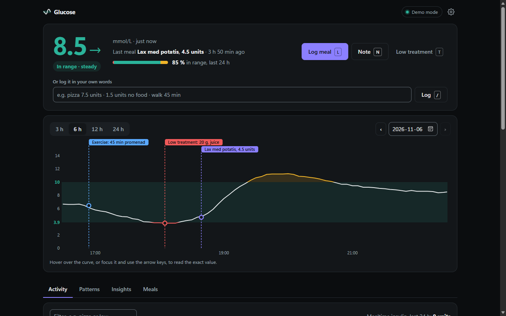

En dashboard för typ 1-diabetes
Jag har typ 1-diabetes och bär en FreeStyle Libre-sensor. Appen visar vad blodsockret är just nu, men inte det jag oftast undrar: hur gick det förra gången jag åt pizza och tog 7 enheter? Så jag byggde en egen dashboard tillsammans med Claude Code.
Den hämtar mina värden varje minut, dygnet runt, på en Raspberry Pi 4. Måltider loggar jag genom att skriva till en egen Telegram-bot var jag än är, till exempel pizza 7,5 enheter
. En lokal AI på mitt grafikkort svarar på frågor om mina värden, så frågorna lämnar aldrig hemmet.
Du kan prova den själv i webbdemon, med en påhittad person. Koden ligger på GitHub.
19dagars arbete
2filer: server och sida
4 535rader kod
 25 oktober. Den första versionen: värdet, en vit linje och en tabell med tid i målområdet. Fungerade, men berättade inte mycket.
25 oktober. Den första versionen: värdet, en vit linje och en tabell med tid i målområdet. Fungerade, men berättade inte mycket.
6 november. Kurvan byter färg utanför målområdet, och promenaden, känningen och maten syns där de hände.
Alla skärmbilder visar demoläget: en påhittad person med 90 dagars värden. Mina egna hälsodata syns aldrig här. Alla nio versioner, från 25 oktober till i dag.
Så hänger det ihop
Allt är skrivet i Node.js utan ett enda paket att installera. Servern är en fil och sidan en annan. Det gör den lätt att flytta, och den har redan flyttat en gång: från min dator till en Raspberry Pi som står på dygnet runt.
varje minutLibre-sensorn
Värdet går via Abbotts LibreLinkUp, samma tjänst som anhöriga använder för att följa någon.
dygnet runtRaspberry Pi 4
Hämtar värdena, sparar allt och läser Telegram-boten. Dashboarden öppnas från datorn eller mobilen hemma.
var jag än ärTelegram
Jag skriver vad jag åt. Pi:n hämtar meddelandena själv, så ingen port behöver öppnas i routern.
när datorn är påGrafikkortet
Ollama med gemma4:12b tolkar fritext och svarar på frågor. Är datorn av tar en enkel regelbaserad tolkare över.
Från första kvällen till i dag
Första versionen
Inloggning mot LibreLinkUp, en kurva och en logg för måltider med insulindos. Resten av kvällen gick till detaljer.
Insulintyper och en omdesign
Listor över vanliga insulin, en dygnsprofil och en hel omdesign. Stegen från mobilen hoppade jag över.
Djup QA, lokal AI och Telegram
En genomgång av hela koden: inloggning som gick ut, tidszoner, två enheter som skrev över varandras ändringar, skydd mot att andra webbsidor läser värdena. Sedan veckosammanfattning, lokal AI via Ollama och fritextloggning. En mobilapp prövades och lades ner till förmån för en Telegram-bot.
Finputs och den första designgranskningen
Ollama startar och stängs med dashboarden. Fläskfärs ris
blir Fläskfärs och ris
, och promenad 5 minuter
blir 17:05–17:10 Kort promenad. Den första granskningen gav 27 av 40. Sidan hämtar nu bara det som är nytt varje minut: från 307 kB till 0,5 kB per minut.
Tio granskningar och flytten till Pi:n
En egen dialog för känningar med mina vanliga mängder som snabbknappar, tydligare lågt läge, tangentbordsgenvägar och ljust eller mörkt tema att välja. Varje runda åtgärdades i steg och mättes om. På kvällen flyttade servern till Raspberry Pi:n.
Månaden i siffror, rapporter och git
En sammanfattning per månad med en bild att dela, /week och /month i Telegram, tokenräkning för tävlingen och versionshistorik.
Favoriter i Telegram
Det jag äter oftast blir knappar under textfältet i boten, och den frågar med knappar hur många enheter. En egen app inuti Telegram byggdes och togs bort samma kväll: den var inte snabbare än att skriva.
Måltiderna jämförda
En tabell över hur det brukar gå efter varje rätt: hur många gånger, snittdos, stigning, topp och hur ofta det gick högt eller lågt. Sortera på vilken kolumn som helst, och öppna en rätt för att se varje gång.
Symboler i kurvan och en statussida
Mat, dos och promenad som små symboler i kurvan. En måltids kurva bredvid tidigare gånger med samma mat, en årsvy och en sida som visar hur Raspberry Pi:n mår.
Ny granskning
Ärligare täckning när värden saknas, rättningar för smala mobiler, och dashboarden svarar bara i hemnätet, inte i Pi:ns andra nät.
Insikter om dygnet
Dygnets delar, en värmekarta dag för dag och året med en ruta per dag. Sensorns ålder står under värdet, och en ny sensors första dag syns i kurvan.
Färre flikar
Ett eget målområde, långtidsverkande insulin och varningar från Pi:n i Telegram. Fliken Patterns togs bort och delades upp mellan Insights och Meals, och månadsbilden försvann.
Säkerhet, webbdemo och tester
Flikarna överst med en Log-knapp som alltid finns. En genomgång inför tävlingen hittade tre fel. Koden och en webbdemo kom ut på GitHub, med inspelade svar från den lokala AI:n, och elva tester körs nu efter varje ändring.
Historiken
En sida där varje version från 25 oktober och framåt körs med samma påhittade person, var och en startad ur git.
Två stränga kodgranskningar
Runt 90 fynd i säkerhet, sparande, inloggning, tillgänglighet och uppladdningen till Pi:n. Sedan tillkom en frivillig kod för andra enheter i hemnätet, en tabell under kurvan för skärmläsare och en uppladdning som testar först och backar om något går fel.
Ett eget namn
Dashboarden heter nu glucose.local i hemnätet, och skärmbilderna till tävlingen togs om.
I mobilen, 17 november. Varje måltid med startvärde och topp, och en känning med hur lång tid det tog att komma upp.
Insights. Veckan, månaden och året. Månadsbilden som fanns här förut togs bort 16 november.
Elva granskningar
Designen granskades med verktyget Impeccable: två agenter går igenom sidan mot tio tumregler för användbarhet och ger 0–4 poäng per regel. Efter varje granskning åtgärdades fynden ett steg i taget, och sedan mättes det om. Den tekniska granskningen (tillgänglighet, prestanda, mobil) gick från 16 till 19 av 20.
Poäng av 40 per granskning, 4–5 november. Efter den sjunde låg den mellan 33 och 36: varje ny granskare hittade nya saker, så Claude föreslog att sluta jaga 40.
Tokens
De tre bästa bidragen ska redovisa sin tokenanvändning. Siffrorna kommer ur Claude Codes egna sessionsloggar, och varje svar räknas en gång. Den absolut största posten är cache: hela samtalet hittills läses om vid varje svar, vilket är billigt men blir många tokens på en lång dag.
Cache lästNy text in (input + cache skriv)Text ut
| Totalt, 25 okt – 24 nov | Svar | Ny text in | Text ut | Cache läst | Summa |
|---|
| Claude Code | 3 994 | 23 349 839 | 4 736 940 | 1 160 569 084 | 1 188 655 863 |
Räknat 24 november med ett eget skript som läser Claude Codes loggar. Den lokala AI:n kör på mitt eget grafikkort och kostar inga moln-tokens: 56 206 tokens i 33 anrop sedan dashboarden började logga det 6 november.
Ett meddelande från boten
Varje söndag kväll kan boten skicka veckan i siffror, om man slår på det. Det här svaret kommer från demoläget.
/week
📊
Your week · Sat 31 Oct – Fri 6 Nov
In range
85 % (week before 90 %)
5 lows (week before 4) · average
7.6 mmol/L
Time in range per day
Sat ████████░░ 80 %
Sun █████████░ 90 %
Mon ██████████ 95 %
Tue █████████░ 89 %
Wed ████████░░ 81 %
Thu ████████░░ 79 %
Fri ████████░░ 84 %
Meals: Lax med potatis ×4, Pizza ×3, Pasta bolognese ×3
Exercise logged 3 times
Den ger aldrig dosråd
Dashboarden och dess AI beskriver vad som hände, aldrig vad jag borde göra. Frågor om doser får ett fast svar från servern, och varje fråga till AI:n slutar med samma påminnelse. Den ersätter inte heller Libre-appens larm.